バツーマウンのナゾの庭園
BatuMaung；Penang
マレーシアのペナンである。
御存じの通り、ペナン島ではスマトラ島沖地震の津波によって60名以上の人命が失われてしまった。ペナン島だけでなくインド洋沿岸で亡くなった全ての方々に御冥福をお祈り致します。あまりシャレにならない時期に行ってしまったが、ペナンでこんなアホな事をしていても全く危険はない、と言う事が御理解いただけたら幸いである。
ペナンの空港の近くにバツーマウンという小さな海沿いの街がある。某ガイドブックにタイガーバームガーデンのような庭園があると書いてあったので、行ってみた。タクシーに乗り、運ちゃんに某ガイドブックの写真を見せて「ここへ行ってくれ」と頼むとウムとうなずき車を発進させる。
おっ、意外と有名なところなのか？
運ちゃんに津波の様子を聞くと「全然ノープロブレムだ」的な答え。中々頼もしい運ちゃんである。タクシーはバツーマウンに近付く。タクシーが門の前に停まる。で、見るとそこにはWarMuseum（戦争博物館）と書いてある。
ちが〜う！
自信満々だった運ちゃん、「えっここじゃないの？」と今度は写真を持って地元のおっさんに聞き込み捜査。仕事早いぞ。で、何人かに聞き込んだ結果・・・「何だか、もうないみたいだよ〜」との答え。うひゃ〜。無くなっちゃったか〜！運ちゃんの聞き込み捜査によると撤去したのか放置されてるのかは判らないという。ということは庭園自体はクローズしていてもそっくりそのまま残っている可能性も考えられるから一応行ってみる事にする。
タクシーは鄭和三保宮という寺の前に停まった。運ちゃんはここだという。
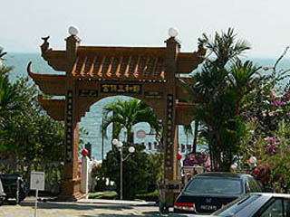
えっ、ここ寺じゃん。と思いつつ門を潜る。
何でも三保公脚印SamPohFootprintといって巨大な足跡があるらしい。
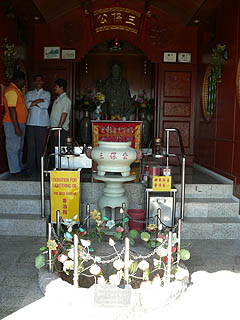 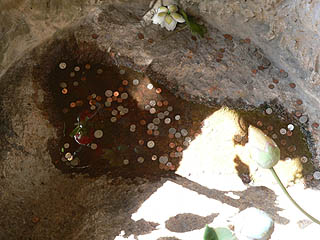
廟の中に井戸のようなモノがあり、底に大きな足跡のような窪みがあってお賽銭が投げられていた。フムフム、これは大きな足跡だな、察するに10メートル位のビッグな人物だったに違いない・・・って、ちが〜う。足跡見に来たんじゃないっつーの。と、運ちゃんまたしても聞き込み捜査開始。するとこの先に例の庭園があると言う。鄭和三保宮の隣にある百里鮮海鮮村
BestViewSeafoodRestaurantというレストランのそのまた隣の海沿いに庭園はあった。おお、ハラショー。運ちゃん、ベリーグッジョブ。ありがとう！
と言う訳で前置きが大変長くなってしまってスミマセン。やっと庭園に到着しました。
木々の間から早くもコンクリ像が見え隠れしている。
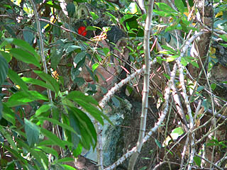 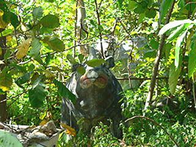
レストランの従業員によると以前のオーナーが趣味でつくった庭園だったが、今はオーナーが変わってしまったので放置プレイ状態になっているそうな。
かつてはもう少し見通しが良かったのだろうが伸び放題伸びてしまった木々の中に埋もれてました。
庭園の入り口（といってもハッキリした区切りなどないのだが）で素敵な怪獣がお出迎え。
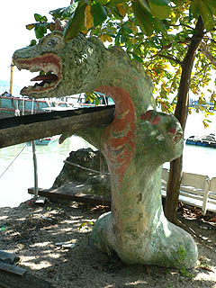
若干退色しているが迫力は満点である。
すぐ後ろは海で、漁船がたくさん停めてある。波打ち際だが被害の大きかった島の北側とは逆サイドだったので津波の被害はなかったようだ。
その隣には何故か自由の女神とペガサス。
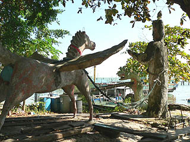 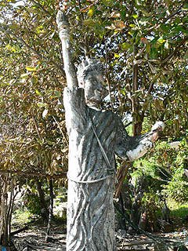
自由の女神とペガサスの間には何故かヨレヨレのハンモックが渡されていた。こんなところで昼寝してたら夢見も最高でしょうな。
変な生き物に追いかけられる夢とか自由の女神が覆いかぶさって来る夢とか。
世界中に自由の女神数あれど、これほど良いデッサンの狂いっぷりのモノには中々お目にかかれない。物凄く私好みで良かったです。
そもそも何のためにこの庭園をつくったのかすら判らないが、コンクリ像のモチーフには脈絡ゼロだったような気がする。
で、いよいよ庭園のメインの広場である。といってもシンガポールのハウパーヴィラの爪の垢ほどの広さだが。
某ガイドブックに出ていた在りし日の写真と比べていただければ一目瞭然だが荒れ放題荒れてます。
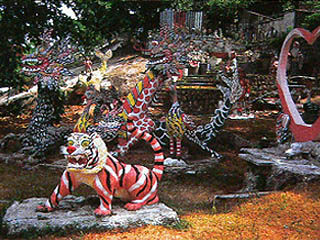 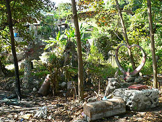
以下、右脳の能力を全開にして想像力120パーセントでご覧下さい。
庭園内のあちこち（というかほとんど）で焚火をしている様子で、地面は灰だらけ歩く度にパフパフ灰埃が巻きあがって荒廃感満点でした。
在りし日には勢いのあった虎も御覧の通り。
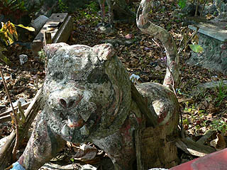
メインと目される二匹の大きな龍も崩潰寸前。
でも、良く見るとウロコを一枚一枚塗り分けたりして、やる気魂の痕跡が伺える。
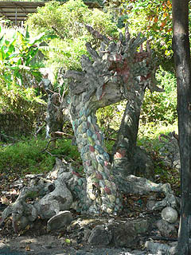 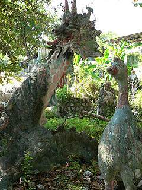
現役時代はさぞ迫力があっただろうに・・・合掌。
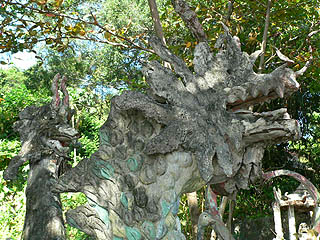
龍の隣には何故かハート形のオブジェがありその向こうには観音像らしきコンクリ像が見える。
このコンクリ像は頭上をナーガのようなものに覆われているので退色が少なく比較的状態が良い。
あ、ナーガの下にいるのはお釈迦様だったりするからもしかしたら観音様じゃないかも。ファンシー過ぎて良く判りません。
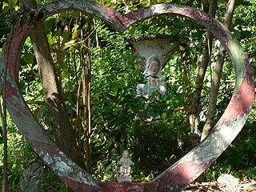 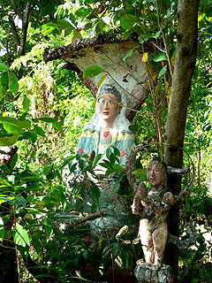
ゲートらしきものも所々壊れちゃっている。
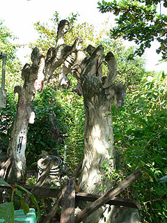
この庭園には観音像をはじめ仏教的なコンクリ像が多かった。一応信仰の場だった可能性も捨て切れないが、全体的にはかなり雑多なアイテム揃いだったので単なる趣味の庭、あるいは客寄せ用の庭だったと思われるが、真相は闇の中である。
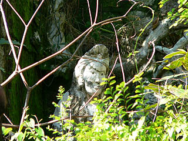 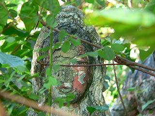
メインの広場の一画には東屋があり、その周辺もナイスアイテム満載のファンキーな場所だ。
マーライオンや変な動物などは確かにハウパーヴィラを彷佛とさせる妙なカタチだが、造型技術としてはかなり下手っぴで、どちらかというとこちらの方が好みだったりする。ペイントのセンスも私好みのビビッド系だったようだ。
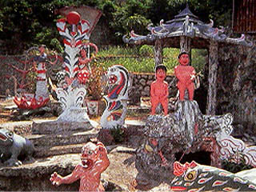 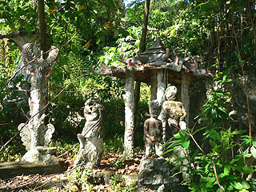
小便小僧も白髪化してチンコ取れちゃってるけどがんばってまっス。
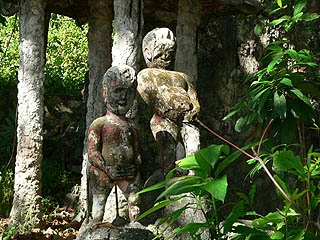
カエルに魚。やっぱ信仰施設じゃないのかな。
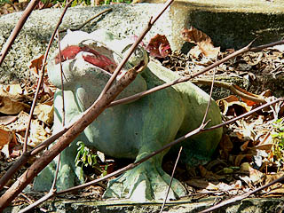 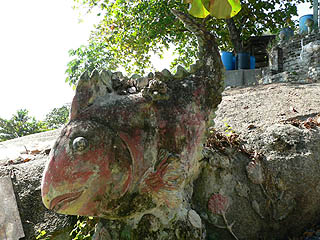
手前にいるのは弥勒菩薩か。ペンキが剥がれかかっていてかなり無気味な顔になっている。で、奥は何でしょう。仙人か？
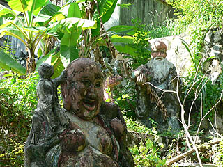
奥の方には一段高くなっていて建物があった。
その周りにも変な彫刻や彫像があったので作者のアトリエのようでもあったが誰もいないようだった。
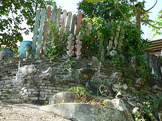
廃墟になってしまって残念だが、退色していてもその訳が判らないグルーヴ感は感じ取る事が出来る。むしろその荒れた様子が、より一層不思議な雰囲気を高めている感がある。色は消えかかっているが充分楽しめるなかなかオツな廃墟だった。
それにしてもわずか数年でこんなになっちゃうなんて自然の力って凄いですね、って話になっちゃうよなあ〜。
庭園の入り口で待っていた運ちゃん、「いや〜、面白かった〜」といったら「これのどこが面白いんだ？」って顔してました。
・・・いや、わからなければ別にいいっす。
次のスポットへGO！
馬来半島珍寺伝説
珍寺大道場 HOME